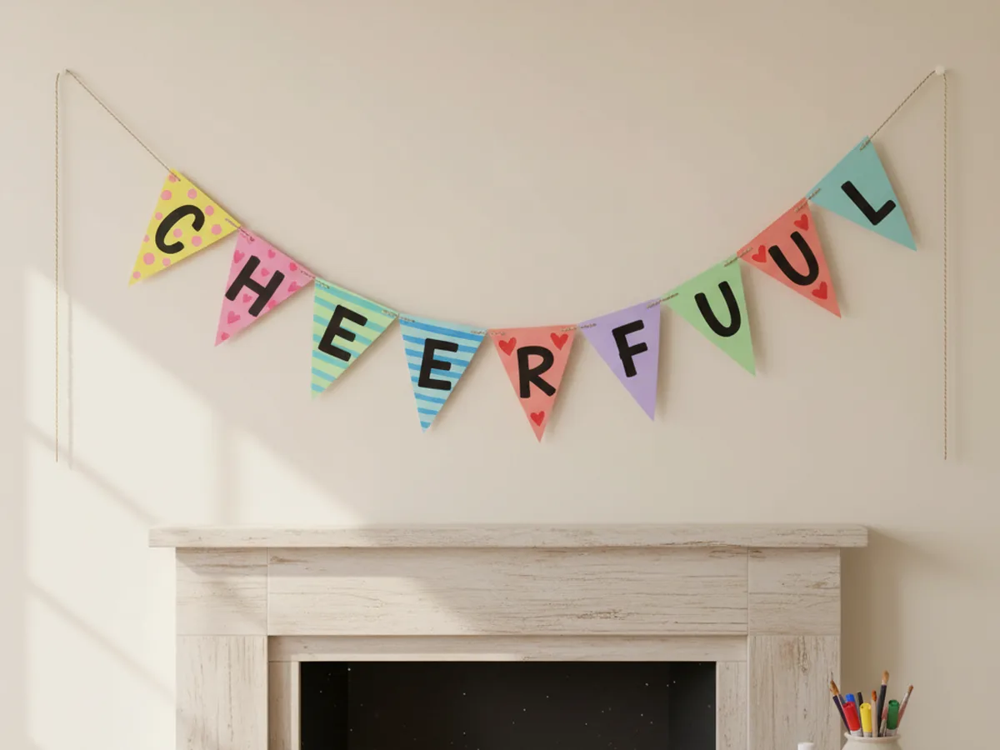
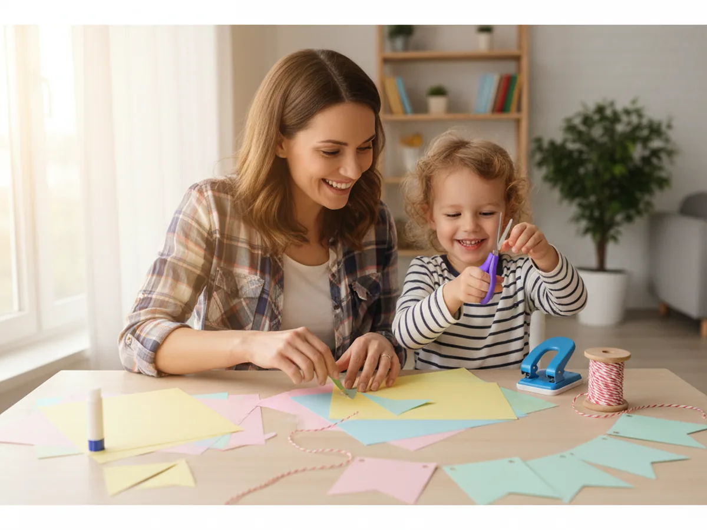
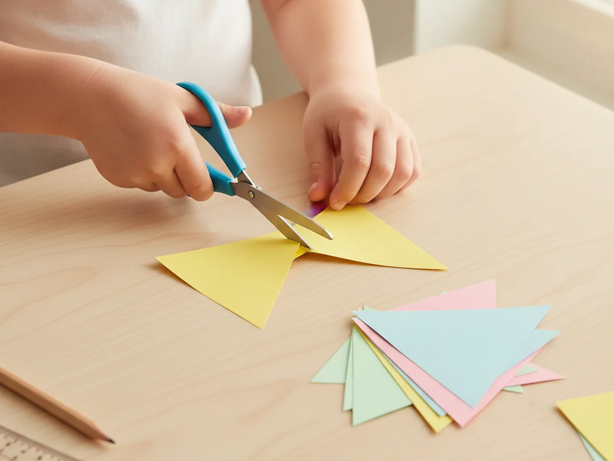
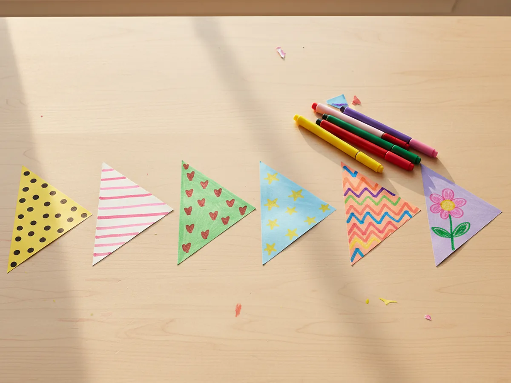
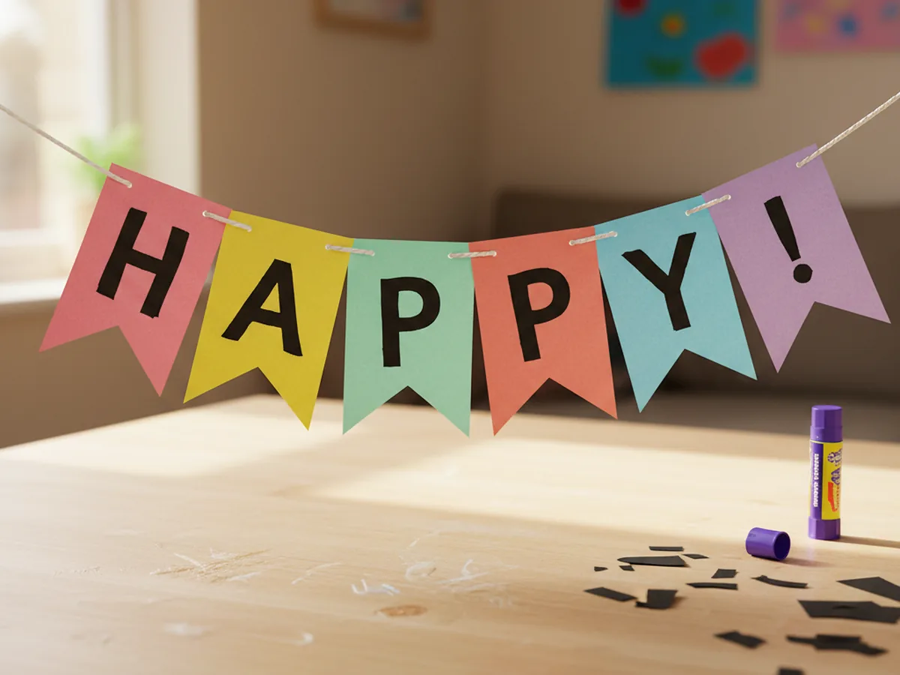
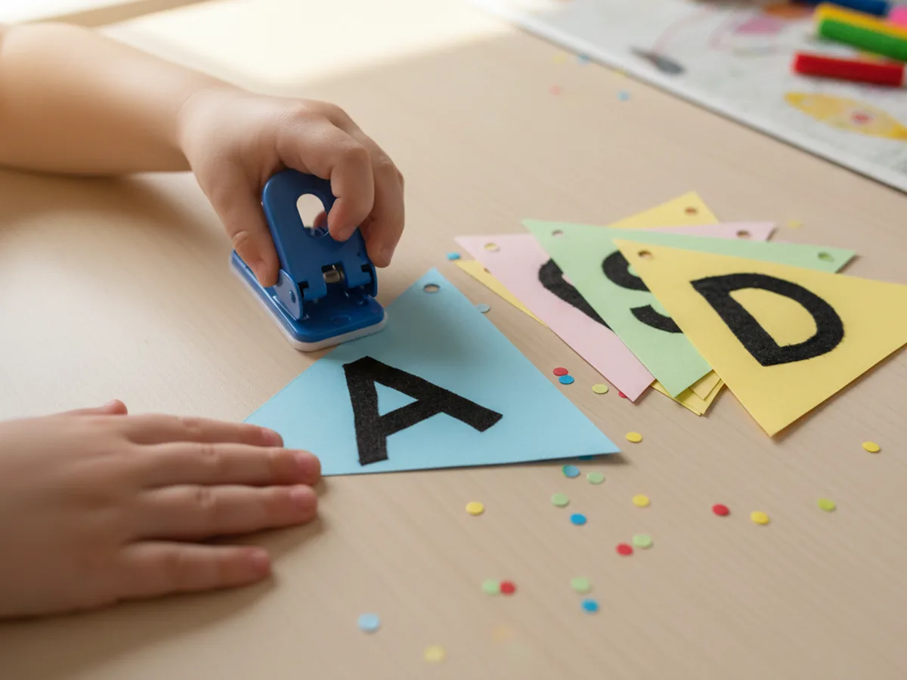
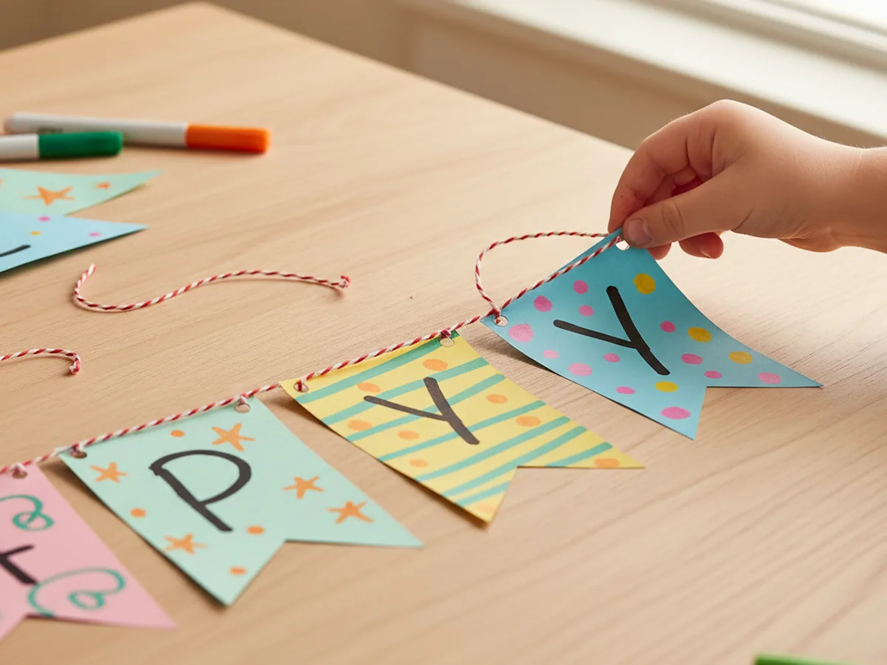
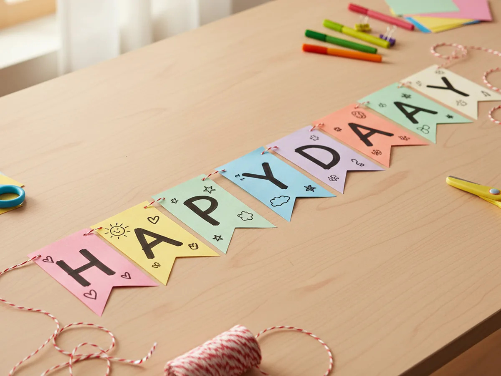
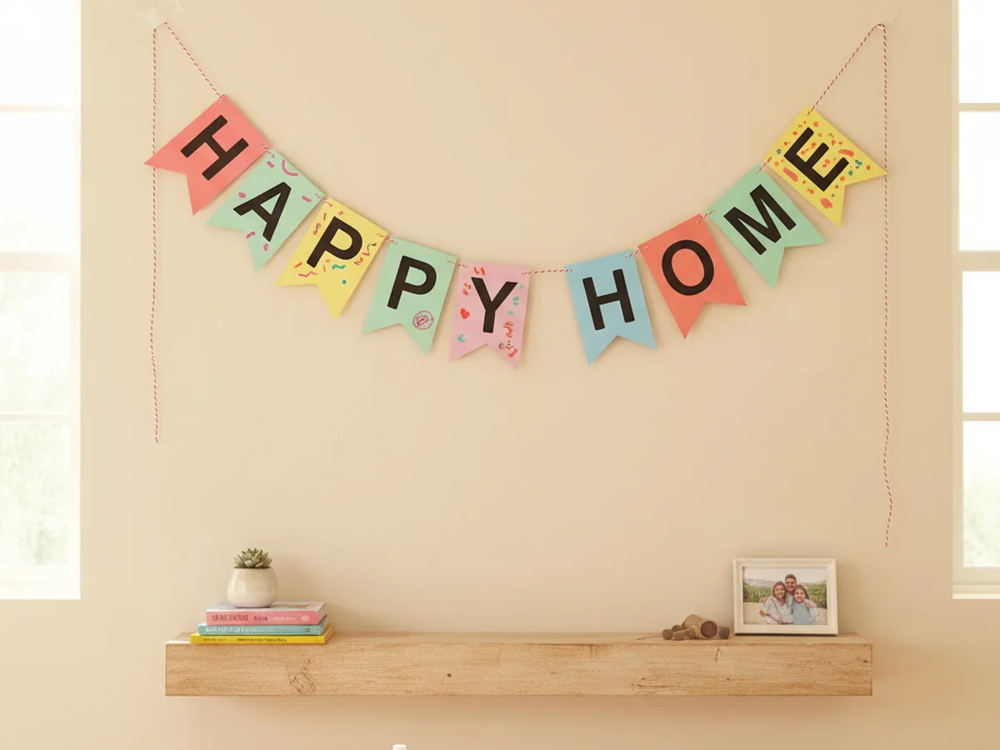

These cheerful paper craft banners are one of those projects where a few colorful triangles and a piece of string instantly transform a corner of your home. You cut matching flags from cardstock, decorate them with markers and small paper shapes, punch two holes at the top of each one, and thread them onto baker's twine. That is the whole banner, and the moment your child sees it strung across the mantel they will run to show every family member who walks through the door. 🎉
It is a wonderful project for kids age 3 and up, and a calm, low-mess activity to share at the craft table. Younger children can decorate the flags and slide them onto the string, while older kids can handle the cutting and the letter work. Either way, the finished paper craft banners end up cute, personal, and proudly homemade.
Why Kids Love This Craft
Children adore anything that turns into a real decoration the family actually uses. With a homemade banner, your child gets to watch their work travel from the craft table to the wall, and that journey feels like a tiny celebration in itself. Every time they walk past the banner over the next few days, they will point at it, beam, and say "I made that."
This paper banner craft also gently builds real skills without ever feeling like a lesson. Cutting the triangle flags supports scissor practice. Punching the holes works hand strength in a satisfying way. Threading the flags onto the twine is a sweet fine motor moment, and arranging the letters in the right order gently helps with early reading and sequencing. None of it feels like work because the whole project is wrapped in the excitement of making a real decoration.
The decorating step is where every child's personality really comes out. Some kids want bright zigzags and polka dots, some glue tiny paper hearts on each flag, some draw a picture for each family member. There is no wrong version of an easy paper banner craft, and that freedom is exactly what makes children feel proud of what they built. By the time the banner goes up, it carries their personality on every flag.

What You'll Need
Here is everything you need to make these paper craft banners at home, with most supplies probably already living in your craft drawer.
- Crayola Construction Paper, 240 ct, gives you a rainbow of colors so every triangle flag can look different
- Astrobrights Cardstock, 65 lb Bright Assortment, sturdier than thin paper and helps the flags hold their shape on the string
- DECORA Baker's Twine, 6 Pack, sweet bakery style cotton twine that looks adorable strung along a wall
- Bostitch inLIGHT One-Hole Punch, easy enough for small hands and makes clean holes the twine slides through
- Elmer's Disappearing Purple Glue Sticks, easy for little hands and dries clear so the letters and shapes stay neat
- Fiskars Blunt-Tip Kids Scissors, safe for ages 4 and up and just right for cutting matching triangles
- Crayola Broad Line Markers, for adding playful color details, polka dots, stripes, and little drawings
- Sharpie Fine Point Marker, Black, makes crisp letters and outlines so the message reads clearly from across the room
- A pencil and ruler, optional, for tracing matching triangle flags before cutting
Step-by-Step Instructions
Take this one calm step at a time and your child will have a full handmade banner in under an hour. Let them help with every part, even if they just hold a flag still while you punch the holes.
Step 1: Cut the Triangle Flags
Start by cutting six to ten triangle flags from colored cardstock or construction paper. About 5 inches wide at the top and 6 inches tall makes a nicely sized flag for these paper craft banners. Use a ruler and a pencil to lightly trace the first triangle, then use that one as a stencil for the rest so all the flags match. Pick a different color for each flag, or repeat colors in a pattern your child likes. The edges do not need to be perfect, and a slightly imperfect cut gives the banner a charming handmade look.

Step 2: Pick a Theme and Decorate the Flags
Now pick a theme together. A birthday banner, a welcome home banner, a little cheer for a new season, or just a happy banner spelling a child's name are all wonderful choices. Then let your child decorate each flag with markers, paper shapes, stickers, or simple drawings. Polka dots, stripes, hearts, stars, and little flowers all look adorable. This is the most playful part of the whole paper banner craft, and it sets the personality of the finished piece.

Step 3: Add Letters or a Message
If you want the banner to spell a word, this is the moment to add letters. Cut letters from a contrasting color of cardstock, or write each letter with a black fine-tip marker. Glue or write one letter per flag so the message reads clearly across the string. Sweet message ideas include the child's name, HAPPY, WELCOME, HELLO SPRING, or LET'S PLAY. For very young kids, simple shapes like hearts or stars on each flag work just as well as letters.

Step 4: Punch Two Holes at the Top of Each Flag
Stack the flags one at a time and use a single-hole punch to make two small holes near the top corners of each one. Aim for about half an inch in from each top corner and half an inch down from the top edge. This is the most satisfying step for many young kids because the punch makes a delightful little click and a tiny paper circle drops out each time. Save those tiny circles in a small bowl, since they make adorable confetti.

Step 5: Thread the Twine Through the Holes
Cut a length of baker's twine that is comfortably longer than the wall you plan to decorate, leaving extra at each end for tying. Thread the twine through one hole on the first flag from the back to the front, then back through the other hole from the front to the back. Pull the flag gently along the string and repeat with the next flag in the order your message needs. This threading rhythm is so soothing, and most kids settle into it quickly once they see how it works.

Step 6: Space Out the Flags Evenly
Once every flag is on the string, spread them out so they sit at even intervals. A gap of about 2 to 3 fingers between each flag usually looks cute and balanced for these paper craft banners. Leave plenty of extra string at each end for tying, taping, or pinning the banner up. If your child wants the flags closer together for a packed look or further apart for a longer banner, follow their lead. The spacing is part of their creative choice.

Step 7: Hang the Paper Craft Banner
Now for the most exciting part. Tape, pin, or tie each end of the twine to a wall, mantel, doorway, window frame, or the back of a chair. Let the banner droop a little in the middle so it has that classic gentle curve. Step back with your child and let them admire what they made. Most kids gasp the first time they see their own banner up on the wall, and that little gasp is the whole point of this cute paper craft banner. 💛

Variations to Try
Birthday Name Banner: Cut the flags from pastel cardstock, write each letter of the birthday child's name on a separate flag, and add a tiny gold paper star at the top of each one. Hang it above the cake table for a sweet handmade birthday backdrop the family will photograph all afternoon.
Seasonal Shape Banner: Skip the triangles and cut the flags into seasonal shapes instead. Hearts in February, eggs at Easter, leaves in October, and snowflakes in winter all look adorable strung along the same baker's twine, and the silhouette alone tells the story of the season.
Photo Mini Banner: Make a smaller version with little 3 inch flags and clip a tiny printed photo to each flag with a mini wooden clothespin. Hung above a desk or a child's bedroom shelf, this version turns the banner into a sweet keepsake of family memories. ✨
Final Thoughts
A simple paper craft banner is one of those projects that proves you do not need party store decorations to make a moment feel special. A few sheets of cardstock, a piece of twine, and 45 minutes together at the table is enough to brighten an entire room. The real win is the moment your child runs across the house to show grandma the banner they made. That little burst of pride is the whole reason we craft together. Happy crafting, mama. 🌟
More Crafts You'll Love
If your family enjoyed making this banner, here are two more sweet paper crafts to try next.